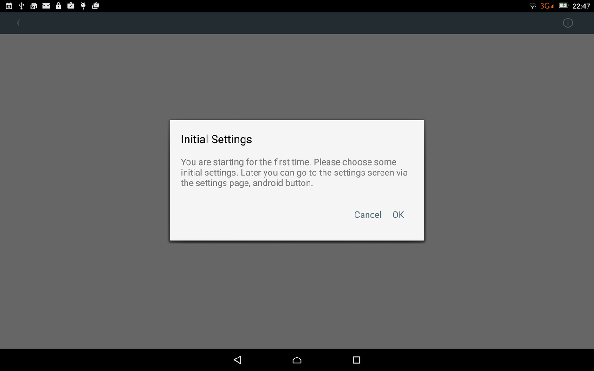
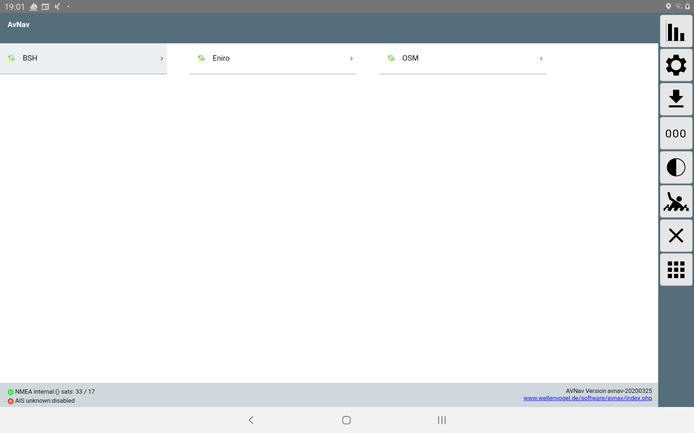

Nachdem die Navigations-App für die Nutzung mit dem Raspberry Pi bereits einige Jahre erfolgreich im Einsatz ist, gibt es jetzt auch eine Version, die direkt (ohne einen Raspberry) auf Android läuft. Sie erfordert Android ab 4.4 (KitKat).
Die aktuellste Version kann man unter Downloads
herunterladen. Oder im AppStore.
Ältere Versionen oder daily builds findet man über die Installationsbeschreibung.
Sie verpackt im Wesentlichen die Web-App (siehe Beschreibung) in eine Android Applikation - siehe dort auch zum Erzeugen/Konvertieren der Karten.
Es kann das interne GPS des Gerätes genutzt werden. Alternativ können NMEA Daten über TCP/IP, bluetooth oder einen USB-Seriell-Adapter (erfordert USB-OTG) empfangen werden. Die Quelle dafür kann z.B. ein Raspberry mit meiner Software sein - aber auch ein beliebiger anderer Sender, der die NMEA Daten per WLAN bereitstellt. Auch eine einfache GPS bluetooth "Maus" ist geeignet.
Damit kann die Software auch auf Tablets ohne eingebautes GPS laufen.
Die Karten werden im gemf Format erwartet.Ab Version 20200325 auch als mbtiles oder xml files. Sie können in 2 Verzeichnissen liegen:
Die Karten müssen auf das Gerät in eines der Verzeichnisse kopiert werden . Zusätzlich sind einige Demo-Karten vorhanden, die allerdings eine Online-Verbindung erfordern.
Wenn das gewählte Arbeitsverzeichnis (Standard: interne-sd-Karte/avnav) noch nicht da ist, wird es beim ersten Start angelegt.
Die Track-Daten und logs werden in das Verzeichnis tracks unterhalb des Arbeitsverzeichnisses geschrieben.
Im Unterverzeichnis routes werden die Routen im gpx Format gespeichert. Routen und Tracks können aus der App über die Download Funktion an andere Apps weitergegeben werden (siehe Beschreibung der App). Um sie in andere Verzeichnisse zu speichern oder Routen aus anderen Verzeichnissen zu laden (upload Funktion) sollte sinnvollerweise ein Dateimanager installiert sein.
Nach dem erstmaligen Start der App befindet man sich auf einer Einführungsseite:
Die Settings Seite kann über den OK button (oben rechts) oder über den Zurück-Button verlassen werden. Im Normalmodus erreicht man damit die Hauptseite der App.


| Name | Bedeutung | Default |
| Application Mode | Arbeitsmodus, siehe Modus | Normal |
| working directory | das Arbeitsverzeichnis (mit den Unterverzeichnissen charts,tracks, routes) | /storage/sdcard/avnav |
| additional charts directory | ein zusätzliches Kartenverzeichnis (sinnvoll auf der externen SD Karte) | /storage/sdcard/avnav/charts |
| show demo charts | Anzeige der Demo Karten (erfordert Internet Verbindung) | ein |
| WebServer External Access | Im External Browser Mode können andere Geräte von aussen zugreifen. Im Browser erreicht man dazu von der Status Seite eine Anzeige von QR codes - wenn man diese mit dem anderen Gerät ausliest (typisch der 2. angezeigte) und sich im gleichen WLAN befindet, kann man mit dem 2. Gerät ebenfalls zugreifen. | aus |
| Alarm sounds | Hier können die durch den Server erzeugten Alarm-Sounds abgeschaltet werden. Im external Browser mode müssen diese im Browser ggf. zusätzlich abgeschaltet werden. |
| Name | Bedeutung | Default |
| NMEA Source | Auswahl der Quelle für Positionsdaten (Off,Internal, IP, Bluetooth) | Internal |
| AIS Source | Auswahl der Quelle für AIS Daten (Off,IP,Bluetooth) | Off |
| send own position on AIS device | Wenn AIS und NMEA unterschiedliche Quellen haben, wird auf dem AIS channel die eigene Position (RMC) gesendet | |
| IP Address | IP Adresse von der NMEA/AIS Daten empfangen werden sollen | 192.168.10.20 |
| IP Port | Port für den IP Empfang | 34567 |
| Bluetooth Device | Auswahl des Bluetooth Gerätes | |
| USB Device | Auswahl eines angeschlossenen USB devices | |
| USB Baudrate | Baudrate USB | |
| filter own MMSI | hier kann die eigene MMSI eingetragen werden, wenn der AIS Empfänger diese mit ausgibt, die Daten werden dann ignoriert | |
| filter incoming NMEA | hier kann eine Liste von Filtern angegeben werden, d.h. NMEA Datensätze, die empfangen werden sollen. Wenn die Liste leer ist, werden alle Datensätze empfangen. Beispiel: RMC - nur $xxRMC Datensätze werden empfangen | |
| log NMEA Data | schreibe empfangene NMEA Daten in eine log Datei (im tracks Verzeichnis) | |
| log AIS Data | schreibe empfangene AIS Daten in eine log Datein | |
| filter NMEA logs | ein Filter, welche NMEA Daten in das log geschrieben werden sollen |
| Name | Bedeutung | Default |
| offset internal gps(s) | Zeit offset für internes GPS in Sekunden | 0 |
| offset IP gps time(s) | Zeit offset für IP GPS in Sekunden | 0 |
| offset bluetooth gps time(s) | Zeit offset für bluetooth GPS in Sekunden | 0 |
| AIS info invalid after(s) | Zeit, nach der ein AIS Ziel gelöscht wird in Sekunden | 1200 |
| min trackpoint distance(m) | Schreibe einen trackpoint, wenn mindestens dieser Abstand zum letzten vorhanden ist | 25 |
| time between trackpoints(s) | Schreibe einen neuen trackpoint frühestens n Sekunden nach dem letzten | 10 |
| write track file every (s) | Schreibe das trackfile alle n Sekunden in das tracks Verzeichnis. Falls die app abstürzen sollte, sind so die Daten bis zu diesem Zeitpunkt gesichert. Die Trackdaten werden ausserdem beim Beenden geschrieben. | 300 |
| port for external browser mode | Hier kann der durch den Webserver genutzte Port geändert werden. | 34567 |
| Sound for XXX alarm | Hier kann der Ton für die verschiedenen Alarme gewählt werden |